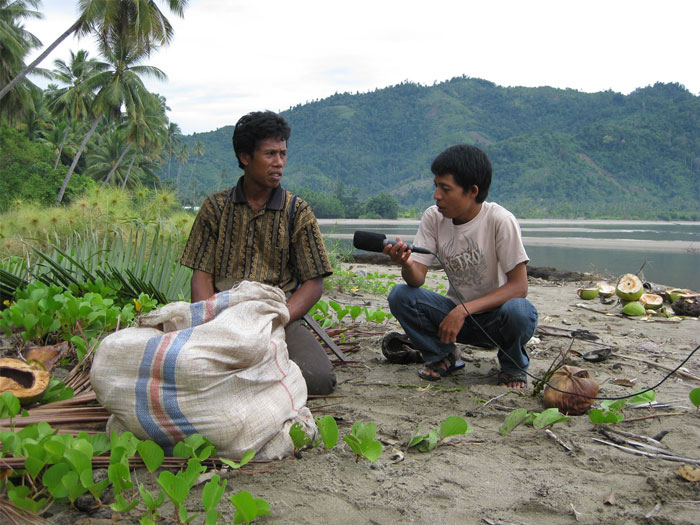
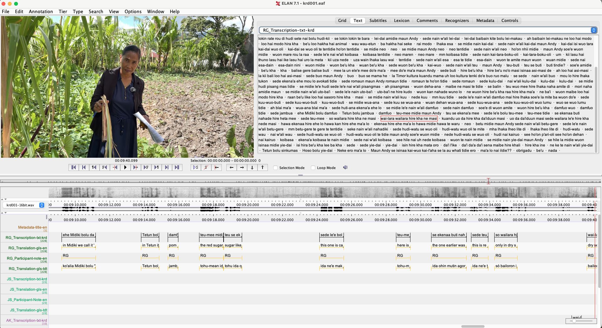
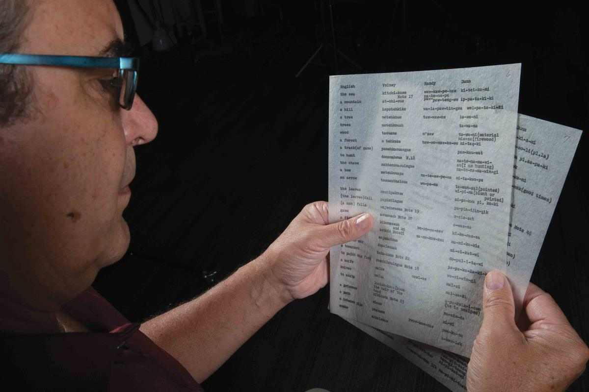
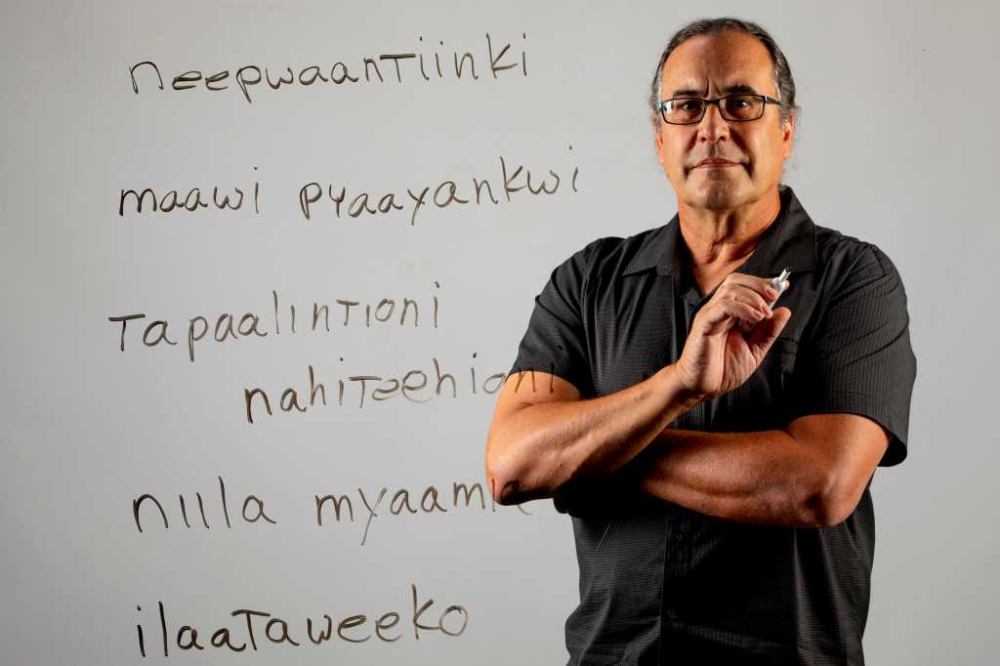
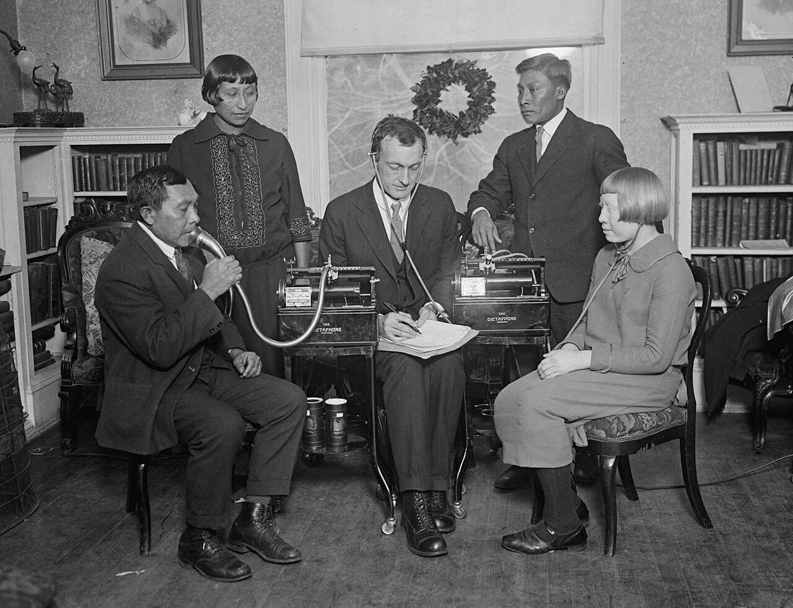
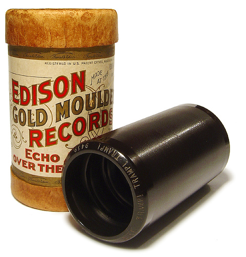
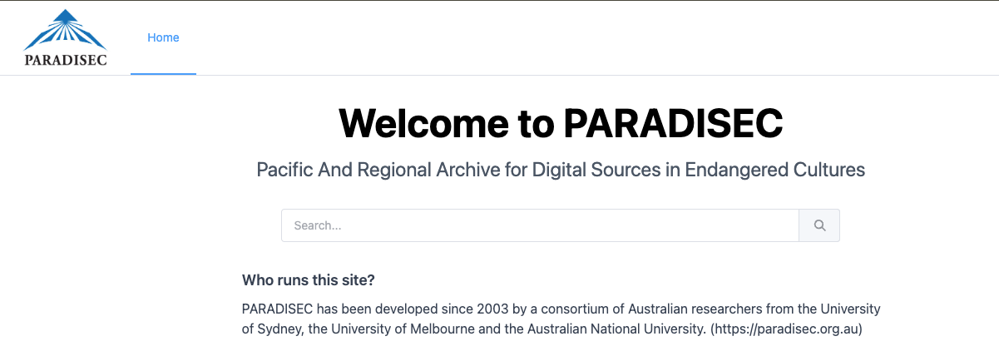
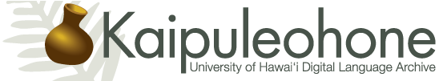
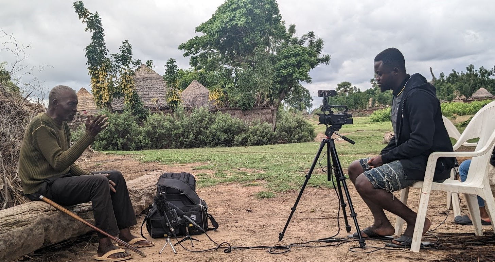

Language Documentation
LING 150C, Week 13
![]()
November 17, 2026
Reminders
Friday, November 20: Draft due (at least 1,750 words).
I’ll give you time on Thursday to work on your drafts and talk them over with your classmates.
If you plan to come to my office hours tomorrow, please let me know ahead of time and try to come for the first 30 minutes (1:30-2) if possible.
Tuesday, November 24: optional 1-on-1 meetings (extra credit).
- I’ll let you know more about this on Thursday.
Week 14 (next week): sign up for a presentation slot.
Today’s Plan
Part 1: What is language documentation?
- Warm-up: grammar or recordings?
- Documentation vs. description
- What goes into documentation
Part 2: Why do it?
- Reasons from linguists and from communities
- From archive back to the language
- A Pacific case: Vanuatu
Part 3: A short history
- From Boas to Himmelmann (1998) to today
- Whose documentation?
Part 4: Activity: Archive Detectives
Part 1: What Is Language Documentation?
Warm-Up (3 min)
A language has about 100 speakers, and no one has recorded it. You can leave one thing behind for people a century from now:
- A. A grammar book describing in great detail the sounds and grammatical structures of the language
- C. A printed dictionary
- B. 100 hours of recordings of people talking, with transcripts and translations
Which do you choose? Why?
What Is Language Documentation?
- Himmelmann (2006): “a lasting, multipurpose record of a language”
- Woodbury (2011): the creation, annotation, preservation, and dissemination of transparent records of a language
Which of these activities / aspects from Woodbury’s definition do you think linguists neglected for a long time?

Documentation vs. Description
| Documentation (collecting) | Description (analyzing) | |
|---|---|---|
| Result | A corpus of utterances, plus notes | Statements about the system, with examples |
| Procedures | Observation, elicitation, recording, transcription, translation | Phonetic, phonological, morphosyntactic, and semantic analysis |
| Main issues | Sampling, reliability, naturalness | Defining terms, justifying the analysis |
Himmelmann (1998): a documentation records the linguistic practices and traditions of a speech community; a description records a language as a system.
Where would you put: (a) a recorded conversation, (b) a grammar chapter on Hawaiian, (c) a transcript with a translation?
What Goes Into Documentation?
Primary data
- Audio or video of communicative events (stories, conversations, songs)
- Notes from elicitation sessions
- Texts written by speakers
The “apparatus”
- Transcription
- Translation (at least one language of wider communication)
- Metadata: who, when, where, what kind of event
- Annotation and commentary

Why does a recording of a great story become nearly useless without the apparatus?
Check Yourself: Primary Data?
Which of these is primary data?
- A phone recording of a grandmother telling a story
- A grammar chapter on a language
- Notes from an elicitation session
- A list of 100 words written down by a visitor in the 1800s
- A recording with no information about who made it, or when
Part 2: Why Do It?
Reasons From Linguists
Himmelmann (2006) gives three reasons:
- Language endangerment: for an extinct language, you cannot check data with speakers or collect more
- Economy of research resources: the next researcher can build on the full set of data, not just a grammar and a few texts
- Accountability: claims about a language can be checked only if the data are accessible
Which of the three would matter most to a speaker’s grandchild? Which do you think matters least?
Reasons Beyond Linguistics
Crystal (2000) gives five reasons to care when a language is lost:
| Because… | The argument |
|---|---|
| We need diversity | Ecosystems are strongest when most diverse; human success owes much to diverse cultures, and language is how cultures are passed on |
| Languages express identity | Language is the main index or symbol of who “we” are (a Welsh proverb: a nation without a language is a nation without a heart) |
| Languages are repositories of history | Samuel Johnson: languages are “the pedigree of nations”; words record past contact (the OED traces words from over 350 languages) |
| Languages contribute to the sum of human knowledge | Each is a unique interpretation of human experience; bilingual people have two perspectives on life |
| Languages are interesting in themselves | Linguistics needs evidence from as many languages as possible; each is a unique system, and none is “primitive” |
Pick one. How would you argue it to a skeptic who says “fewer languages is better”?
Reasons From Communities
What communities do with documentation (François 2018):
- Hear the voices of elders and relatives
- Recover stories, songs, and cultural knowledge
- Create literacy materials for schools and families
What users ask the Alaska Native Language Archive for (Holton 2012, in Henke & Berez-Kroeker 2016): plant knowledge, music, even a nineteenth-century eulogy
What might a community want from an archive that a linguist would not?
From the Archive Back to the Language
- Mutsun (California): a grammar was produced in 1977, more than 40 years after the last speaker died, from earlier records; revitalization followed
- Breath of Life (1996): community members visit the Berkeley archives to learn how to use archived materials
- Myaamia (Miami, Oklahoma): “sleeping” for about 30 years, then brought back into community use from archival records (Leonard 2018)
In these cases, who could be asked a question about the language?


A Pacific Case: Vanuatu
Alexandre François recorded 23 languages in Vanuatu and the Solomons.
- 504 recordings in Mwotlap (1997-2011), part of 962 across 23 languages
- Copies returned to the Vanuatu Cultural Centre and a new cultural centre on Motalava (2011)
- Facebook pages for communities to share recordings
- 21 booklets (primers and story books) in local languages, after the spelling was agreed in public meetings
Documentation Is Not Revitalization
Penfield & Tucker (2011): the two are often treated as separate “arms,” a divide that does not mirror reality
| Documentation | Revitalization | |
|---|---|---|
| Seen as | The “scientific” arm | The “education” arm |
| Defined by | The research community | The speech community |
| Produces | Archived recordings, word lists, dictionaries, grammars, narratives | New speakers: classes, immersion, camps, Master-Apprentice pairs |
| Challenge | Often not made accessible to the community | Turning scientific records into teachable materials |
- Many revitalization teachers are elders with no training in language teaching, or learners themselves
- Programs often serve children, parents, and grandparents at once, so materials must fit different groups
- Leonard (2018): the split between documentation and reclamation is a false dichotomy
Can documentation alone keep a language alive? What else is needed?
Part 3: A Short History
Documentation Is Old
- Woodbury: documentation is “at least as old as writing”
- The spread of writing to vernacular languages and the practice of manuscript curation are documentation on an “enormous scale”
- Franz Boas (early 1900s): collect texts, and write grammars and dictionaries (the “Boasian trilogy”)
- Boas trained native speakers as documenters: George Hunt, Ella Deloria
Is a missionary’s Bible translation “language documentation”?

Timeline 1: Before 1990
| When | What |
|---|---|
| 1743 | American Philosophical Society founded; collects Native American manuscripts |
| 1915-1954 | J. P. Harrington employed by the Bureau of American Ethnology |
| 1930s | Phonograph recordings (after wax cylinders) |
| 1945 | APS acquires the Boas collection |
| 1950s | Tape recording |
| 1953 | Survey of California Indian Languages founded at Berkeley |
| 1972 | Alaska Native Language Center founded (Michael Krauss) |
| 1980s | Video becomes widely available |
What problem do these early archives share?

Timeline 2: 1990 to Today
| When | What |
|---|---|
| 1991-92 | First digital archive for endangered languages (AIATSIS, “might be”); Krauss and Hale et al. sound the alarm |
| 1995 | Nijmegen workshop asks what the “best record” of a language would look like |
| 1996 | First online audio archive for endangered languages (Paris; later Pangloss) |
| 1998 | Himmelmann separates documentation from description |
| 2000-2005 | DOBES (2000), E-MELD and OLAC (c. 2001), ELDP and PARADISEC (2003), NSF/NEH DEL and ELAR (2005) |
| 2008 | Kaipuleohone (UH) opens |
| 2009 on | Community-based research and participatory archives |
What made documentary linguistics possible in the 1990s?
The Counter-Current: Why 1998?
- Mid-century structuralism separated the system from language use; texts became “raw data” for the grammar
- Grammar-writing lost prestige: by the 1980s, whether a grammar could be a dissertation was debated
- Himmelmann (1998): collection and preservation of multipurpose records is its own task
- But: documentation was not new; Boas, Sapir, and others valued primary texts
If it was not new, why does everyone cite 1998?
Answer: Himmelmann named documentation as a field with its own methods and goals, and clarified a distinction that was already hidden in everyday fieldwork: the products of collecting and analyzing have different fates. It also arrived just as endangerment, funding, and digital tools were converging.
The Pacific Story
- Then: missionaries and pioneer linguists collected wordlists and grammar sketches, and Scripture translations; connected speech was rare
- 1970s on: volumes of stories collected in Melanesia and Polynesia
- Now: about 1,500 languages in the region; about half have fewer than 1,000 speakers
- Archives: PARADISEC, DOBES, Pangloss, Kaipuleohone
Why is a wordlist a poor record of a language?


Documentation Reconsidered
Twenty years after Himmelmann:
- The “lone wolf” linguist who collects data and leaves is no longer acceptable
- Community members are included in all aspects of a project, including training
- Archives move from a one-way model to participatory ones
Community-based research (Czaykowska-Higgins 2009): research on a language, for, with, and by its speakers
What changes when speakers are partners, not “sources”?

Whose Documentation?
Leonard (2018):
- Documentary linguistics has colonial origins; it can reinforce power hierarchies
- Languages are classified, named (ISO codes), and written in outsiders’ categories
- Defining what counts as “documentation” is itself a manifestation of power
- Proposal: community members as core stakeholders, including as reviewers
Who should decide what is worth recording?
Part 4: Activity: Archive Detectives
Where Do the Records Live?
An archive is not a website: archives catalog collections with standard terms and plan for long-term preservation (Thieberger)
| Archive | Pacific audio recordings | % of that archive |
|---|---|---|
| PARADISEC | 4,458 | 46% |
| MPI (DOBES) | 3,039 | 5% |
| Pangloss | 1,422 | 43% |
| Kaipuleohone (UH) | 804 | 31% |
Counts as of François (2018).
Why would Kaipuleohone matter to us?
Activity: Archive Detectives
Groups of 3-4. One laptop or phone each.
- OLAC page (4 min): open the page for Southeast Ambrym (a language of Vanuatu) at
language-archives.org/language/tvk. Sort the listed resources into: recordings/texts, descriptions (grammar, phonology), other things about the language. - Your language (8 min): pick a language from a group member’s final paper. Find it on OLAC (
search.language-archives.org) and fill in the worksheet. - Open one item (4 min): find one record in an archive (Kaipuleohone, PARADISEC, Pangloss, or ELAR). What metadata does it give? Is there a transcript or translation?
- Report (2 min): one surprise per group.
| Language / ISO code | |
| Resources listed in OLAC (how many?) | |
| Any audio or video recordings? | |
| Any transcripts or translations? | |
| Who made it, and when? | |
| Who can access it? | |
| Could you use it in your paper? How? |
Report Back
What did you find? What did you not find?
- Mostly recordings, or mostly descriptions and writings about the language?
- Could a speaker’s grandchild find and use it?
- What would you want to know that the metadata did not say?
Wrap-Up
Ethics and Ownership
- Get permission: explain that recordings may be published, archived, and used by others
- Archives can set access conditions: descendants only, education only, or men or women only
- Sensitive material may be restricted, even for the lifetime of the speakers
- No one can foresee all future uses of a recording
If a story is archived, who should decide who can hear it?
What Makes a Good Documentation?
Woodbury’s values (summarized in Henke & Berez-Kroeker 2016):
- A good documentation is diverse, large, ongoing, distributed, and opportunistic
- Its material is transparent, preservable, ethically created, and portable
Warning (Himmelmann 2006): without a theoretical or practical purpose, you get “data graveyards.”
Putting It Together
- Documentation is a lasting, multipurpose record of how people use a language: recordings plus the apparatus that makes them usable
- It serves science (endangerment, research economy, accountability) and communities (voices, stories, literacy, revitalization)
- It has a long history and a 1990s turn, and is now asking whose documentation it is
- For your paper: archives and catalogs are places to find sources
What is one thing that surprised you today?
Looking Ahead
- Thursday: Ch. 22 (Grace, UHM Linguistics)
- Friday, November 20: draft due (at least 1,750 words)
- Tuesday, November 24: optional 1-on-1 meetings (extra credit)
- Week 14: presentation sign-up
Sources Behind Today’s Slides
- Crystal, David. 2000. Language Death, Ch. 2, “Why should we care?” Cambridge University Press.
- François, Alexandre. 2018. In search of island treasures: Language documentation in the Pacific. In McDonnell, Berez-Kroeker & Holton (eds.), Reflections on Language Documentation 20 Years after Himmelmann 1998, 276-294. LD&C Special Publication 15.
- Henke, Ryan E., & Andrea L. Berez-Kroeker. 2016. A brief history of archiving in language documentation. Language Documentation & Conservation 10:411-457.
- Himmelmann, Nikolaus P. 1998. Documentary and descriptive linguistics. Linguistics 36:161-195.
- Himmelmann, Nikolaus P. 2006. Language documentation: What is it and what is it good for? In Gippert, Himmelmann & Mosel (eds.), Essentials of Language Documentation, Ch. 1. Mouton de Gruyter.
- Leonard, Wesley Y. 2018. Reflections on (de)colonialism in language documentation. In Reflections on Language Documentation, 55-65.
- McDonnell, Bradley, Gary Holton, & Andrea L. Berez-Kroeker. 2018. Introduction. In Reflections on Language Documentation, 1-11.
- Penfield, Susan D., & Benjamin V. Tucker. 2011. From documenting to revitalizing an endangered language: where do applied linguists fit? Language and Education 25(4):291-305.
- Thieberger, Nick. 1998 [as labeled]. Documenting languages. Ch. 21 in Languages of the Pacific Islands: Introductory Readings, 257-264.
- Woodbury, Anthony C. 2011. Language documentation. In The Cambridge Handbook of Endangered Languages, 159-186.

LING 150C